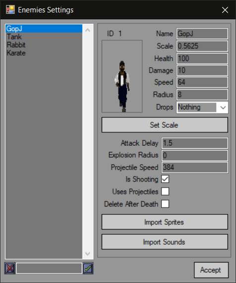
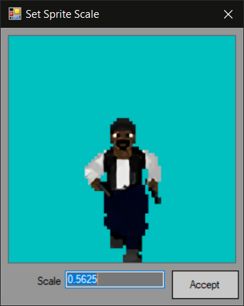

Enemies can be added through "Enemies Settings" menu in "Entities Settings".
The menu is almost the same as for weapons with a few differences: you can add new entries. to do so enter the name of the enemy and either press Return or click a button to the right.

You can also set the scale:

This windows shows enemy sprite relative to one tile. This is made to let you check if your sprite's height fits a single floor.
Enemy properties:
Health - enemy health
Damage - damage dealt to player
Speed - enemy speed. In units per second
Radius - enemy radius. Used for collision checking with player
Drops - item this enemy drops when dying
Attack delay - amount of seconds enemy wait before next attack
Explosion radius - if set to a non-zero value enemy will explode after death
Projectile speed - if enemy uses projectiles this sets projectile speed in units per second
Weapon spread - projectile spread strength, higher values will cause wider and less accurate shots
Is shooting - if set, enemy will shoot instead of moving closer to attack
Uses projectiles - sets if enemy uses projectiles
Fullbright projectiles - disabes or enables lighting on projectiles
Delete after death - removes sprite after death